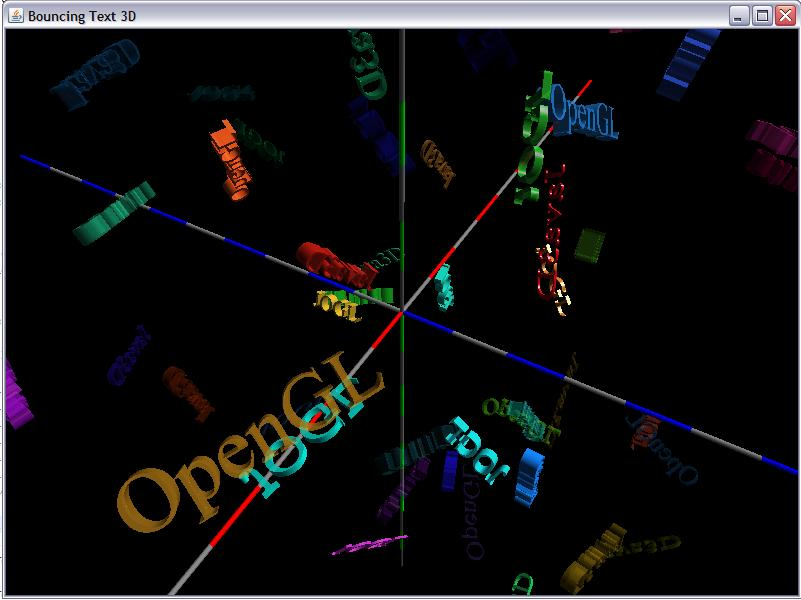

Just a warning: This is very old. I provide it only for legacy's sake. These days, please look into WebGL and Three.js.
The JOGL implementation of OpenGL for Java is an excellent in most respects. The addition of support for "2D" text rendering by the TextRenderer object was an excellent addition. However, this did not provide any true 3D text support, a la the wglUseFontOutline support that is available in the C++ implementation on Windows, for example. I was experimenting with overiding the TextRenderer code to walk the glyphs and generate the 3D rendering when I poking around in the jogl-utils sources I ran across the FontDrawer code.
The FontDrawer code (written by Erik Tollerud and Davide Raccagni of Sun Microsystems, Inc.) was an incomplete implementation of what I was experimenting with. I therefore took the FontDrawer code, renamed it TextRenderer3D and did some fairly singificant refactoring and bug fixing. The result is an object that allows one to draw arbitrary strings in 3D. one can specify the depth of the extrusion and some other (relatively unnecessary) attributes. It also provides the ability to generate display-lists very easily. This article details how it is done and some examples of its usage.
The complete sources are here.
Note: The TextRenderer3D class uses some objects from the vecmath package of Java3D so you will need to install Java3D to use this class. You can get it here. The Eclipse plugin version of Java3D can be obtained here.

Helping Out: If (when!) you see any errors, omissions, or misleading info, please let me know. I am always willing to learn and want to make these tutorials as accurate and helpful as possible. rkwright@geofx.com. TIA.
THe basic approach is that one instantiates a normal AWT Font then gets the path for the set of glyphs by obtaining the PathIterator from the font's GlyphVector:
GlyphVector gv = font.createGlyphVector(new FontRenderContext(new AffineTransform(), true, true),
new StringCharacterIterator(str));
GeneralPath gp = (GeneralPath) gv.getOutline();
PathIterator pi = gp.getPathIterator(AffineTransform.getScaleInstance(1.0, -1.0), flatness);
Note that the transform passed to the path Iterator has the why scale set to -1. This is because SWT has the old style coordinate system where the origin in Y is at the top of the screen. So we need to invert that to match OpenGL's coordinate system (otherwise all the text would be inverted :-).
Also note the flatness parameter. The glyphs are composed of points, lines and quadratic beziers. The beziers need to be flattened. This isn't hard, but fortunately the PathIterator will do it for us. Setting a large value such as 1.0 will result in a very blocky shape as the iterator will simply conclude that the set of points that comprise the control points are "flat enough". If you set an extremely small value the iterator will simply clamp it to a reasonable value. A little experimentation demonstrated that the flattening is very fast so unless you have some need for blocky text or want to keep the resulting display lists simple, set it to a small value like 0.001.
Then the resulting PathIterator is passed to a tesselation routine, which tesselates the path using
GLUtessellatorCallback aCallback = new GLUtesselatorCallbackImpl(gl);
GLUtessellator tess = glu.gluNewTess();
glu.gluTessCallback(tess, GLU.GLU_TESS_BEGIN, aCallback);
glu.gluTessCallback(tess, GLU.GLU_TESS_END, aCallback);
glu.gluTessCallback(tess, GLU.GLU_TESS_ERROR, aCallback);
glu.gluTessCallback(tess, GLU.GLU_TESS_VERTEX, aCallback);
glu.gluTessCallback(tess, GLU.GLU_TESS_COMBINE, aCallback);
The aCallback method is a simple method in a private class that extends the GLUtessellatorCallbackAdapter class. The class overrides three methods:
public void begin(int type)
{
gl.glBegin(type);
}
public void vertex(java.lang.Object vertexData)
{
double[] coords = (double[]) vertexData;
gl.glVertex3dv(coords, 0);
}
public void end()
{
gl.glEnd();
}
As you can see it just maps these to the appropriate GL calls to start and end a vertex list and maps the vertex data into a glVertex3d. Then the glyphs are tesselated by walking each glyph:
glu.gluTessBeginPolygon(tess, (double[]) null);
while (!pi.isDone()) { double[] coords = new double[3]; coords[2] = tessZ; switch (pi.currentSegment(coords)) { case PathIterator.SEG_MOVETO: glu.gluTessBeginContour(tess); break;
case PathIterator.SEG_LINETO: glu.gluTessVertex(tess, coords, 0, coords); break;
case PathIterator.SEG_CLOSE: glu.gluTessEndContour(tess); break; } pi.next(); }
glu.gluTessEndPolygon(tess);
Note that all the glyphs are walked as one complex face, not on a glyph by glyph basis. Note that the z-coordinate is set to tessZ. This is the depth of the font's extrusion. The tesselateFace Once the glyphs have been tesselated at depth zero, the process is repeated at the extrusion depth. The result is two complex polygonal faces that are parallel, separated by the extrusion depth. To complete the job, we have to build the sides.
The sides are built by walking the pathIterator one more time, this time generating four vertexes for each step:
Then the normal is generated for this new rectangle. This is done for all the edges of all the glyphs. And then we're done!
The class is constructed quite simply:
public TextRenderer3D(Font font, float depth)
The font is a normal AWT font. Note that it must be a built-in AWT font or a TrueType font. The AWT PathIterator apparently cannot handle the CFF glyphs of an OpenType font. If you choose an OpenType font the iterator will fall back (silently) to a built-in font. The depth is simply the extrusion depth of the font.
There are a number of methods available on the class, but only 3 are really of any great interest:
public void draw( String str, float xOff, float yOff, float zOff, float scaleFactor )
public int compile( String str, float xOff, float yOff, float zOff, float scaleFactor )
public void call( int index )
The draw method simply creates all the vertexes and renders the text immediately. Note the scalefactor argument. This simply scales the font by calling glScalef(scaleFactor, scaleFactor, scaleFactor).
The compile method is identical to the draw method except that it compiles the glyphs into a GL display list and returns the index of the resulting list. This value can then be stored away and used directly by calling glCallList or by using the convenience method call which does the same thing.
Finally, there are also methods to get the bounding box in X and Y (you can get Z from getDepth()).
Rectangle2D getBounds( String str )
Rectangle2D getBounds( String str, float scaleFactor )
Using the class couldn't be much easier. Here is how to render a single simple string:
TextRenderer3D tr3 = new TextRenderer3D(new Font("Times New Roman", Font.TRUETYPE_FONT, 3), 0.25f);
tr3.draw(str, -offX, offY, -offZ, 1.0f);
Using the compile method is just as easy:
TextRenderer3D tr3 = new TextRenderer3D(new Font("Times New Roman", Font.TRUETYPE_FONT, 3), 0.25f);
int index = tr3.compile(str, X, Y, Z, 1.0f);
tr3.call(index);
I created two simple demo programs TestRenderer3D and BouncingText3D. The former is a Hello World usage of the draw method. The latter is more complex and uses the compile method to bounce dozens of text strings around in 3D space. The sources for both as well as the TextRenderer3D class are here.